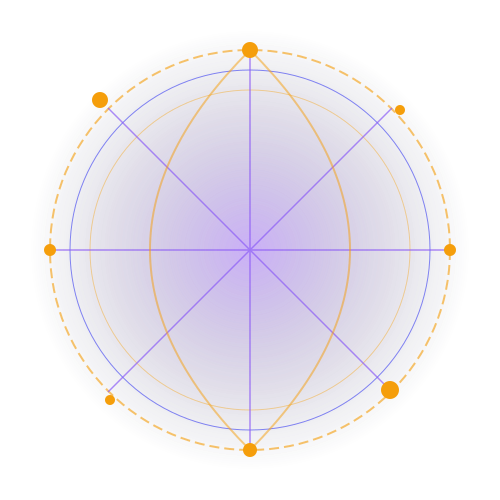

Find Out If You're Truly Compatible
Compare birth charts to analyze relationship potential. Explore emotional, intellectual, and physical compatibility dynamics.
How Relationship Synastry Works
Synastry overlays one birth chart onto another, mapping the aspects formed between different planets.
☄️ Orbital Overlap
We locate the house placement coordinates of your partner's planets in your chart. This details where they influence your day-to-day routine.
📐 Aspect Synthesis
We calculate angles between planetary pairs. Conjunctions suggest shared purpose; squares indicate learning curves; trines represent smooth coordination.
⚖️ Timing Alignments
We cross-examine both transit forecasts to identify shared lifecycle milestones, highlighting key windows for commitment or reflection.
Emotional Harmony
Deep intuitive safety and mutual trust.
Intellectual Cues
Lively debate with occasionally unique filters.
Physical Magnetism
Strong immediate attraction and shared vitality.
Long-Term Goals
Shared stability and career structures.
Synthesis Matrix
Each category represents a detailed alignment score calculated from your birth charts.
- ✓ Moon-Moon and Moon-Sun aspects details.
- ✓ Mercury aspect pairs mapping logic flow.
- ✓ Venus-Mars configurations determining raw attraction.
- ✓ Saturn aspects detailing stability markers.
What is Covered in the Analysis
Explore relationship metrics covered in our complete PDF reports.
1. Relationship Communication Dynamics
Details how you share thoughts, resolve conflicts, and make decisions together. Analyzes Mercury and Third House configurations.
2. Emotional Needs & Security
Maps emotional patterns, home-base desires, and vulnerability triggers. Tracks Moon, Fourth House, and Cancer placements.
3. Romance & Intimacy Potential
Tracks romantic energy, physical attraction, and shared pursuits. Maps Venus, Mars, and Fifth House alignments.
4. Long-Term Karma & Commitment
Highlights developmental triggers, potential roadblocks, and long-term commitments. Details Saturn, Pluto, and Seventh House structures.
Chart Comparison Matrix
We map key placements side-by-side to highlight differences and areas of harmony.
| Placements | Partner A (Marcus) | Partner B (Sarah) | Aspect Impact |
|---|---|---|---|
| Sun Sign | Cancer (10th House) | Libra (1st House) | Square (Creative tension) |
| Moon Sign | Scorpio (2nd House) | Scorpio (2nd House) | Conjunction (Intuitive bond) |
| Ascendant | Libra (1st House) | Aries (7th House) | Opposition (Complementary) |

Partner Testimonials
Read how couples navigated communication and connection using our synastry guides.
"We ordered the Synastry Report to understand differences in our communication styles. Learning that our Mercuries are in square aspects helped us adapt our conflict-resolution style."
Jessica & Mark
Taurus & Cancer"The Synastry Report was extremely thorough. It highlighted the Moon-Saturn conjunction, explaining how we could build a stable foundation together."
Aria & Thomas
Libra & AquariusGenerate Your Relationship Report
Compare your birth details with a partner, business associate, or family member to receive a complete relationship analysis.